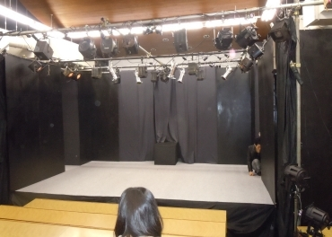

東京工業大学演劇研究部
劇団について
劇団 娘の予感とは？
東京工業大学に存在する唯一（たぶん）の演劇団体です。
東工大演劇研究部という名のサークル活動の枠内ではありますが、実際には『劇団 娘の予感』という名前で活動しています。
春、夏、秋、冬と基本的に年４回の定期公演を行なっており、普段はそれに向けて稽古をしています。 また四大学連合（東京工業大学，東京医科歯科大学，一橋大学，東京外国語大学）や、その他外部の劇団との交流もあり、 『娘の予感』で行うものとは別に外部の劇に出演している部員もいます。
部員は現在１５名程度で、新しい仲間はいつでも募集しています！未経験でもOK！
むしろ今の部員の殆どが入部当初は未経験でした。部員も東工大生だけに限りません。
大岡山近辺に住んでいる他大学の方も大歓迎です！興味のある方はぜひメールしてみてください！
直接部室に来ていただいても構いません。
「演劇やってみたいかも！」という方、待ってます！

２０１４冬公演「フラスコ・ロケット」より
稽古や公演はどんな感じ？

講義室が舞台に変わる。音響・照明も本格的
稽古は、講義室や音楽練習室を借りて行います。
普段の稽古は音楽にあわせて体を動かしたり、筋トレや呼吸法、発声練習、エチュード(即興劇)などの基礎練が中心となり、 公演が近くなると演技の練習に入ります。演技を磨く為の訓練は楽しいシアターゲームから難しい感情表現、 一見演劇に関係無さそうな奇抜なものまで様々です。
公演日になると、普段稽古場として使っている講義室が舞台として生まれ変わります。『娘の予感』が公演を行うときは毎回講義室に パイプで足場を組み上げ、舞台を１から建ててしまいます。皆で協力して舞台を建てた時の感動はなかなか他では味わえません。
Copyright (C)
劇団 娘の予感. All Rights Reserved.